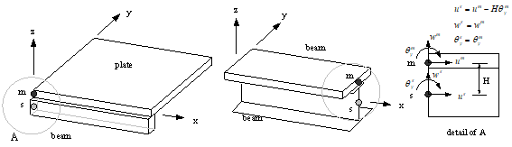
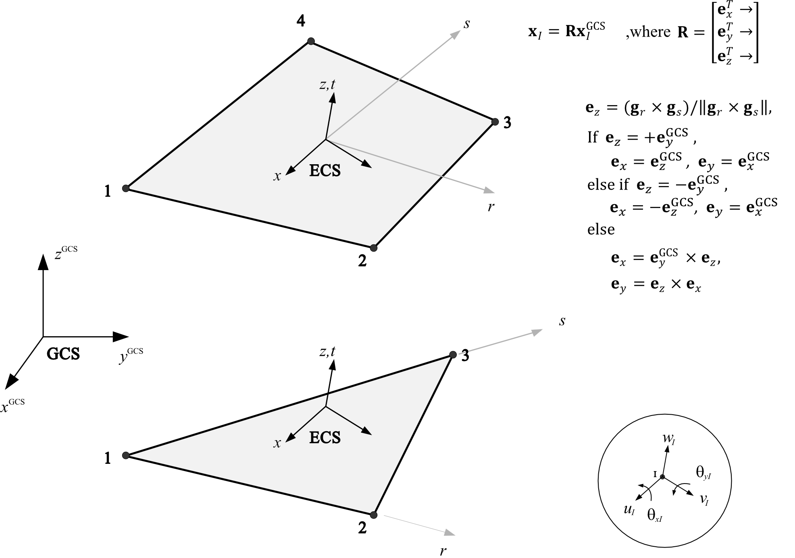
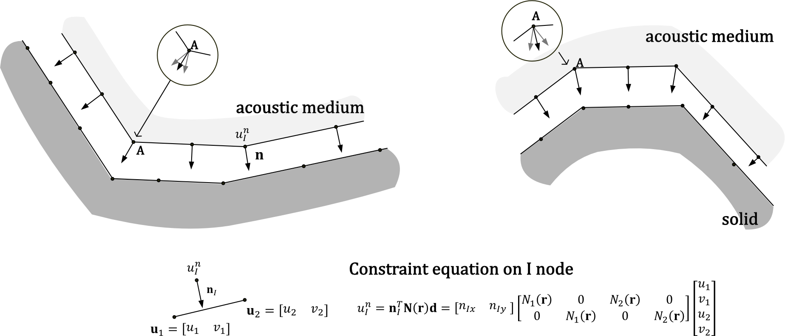

구속조건 명령
구속조건은 *Constraint로 지정한다. 고유이름을 가지며 이름은 중복하여 지정할 수 없다. 구속조건은 single-point constraint(여기서는 Support 조건), multi-point constraint 등과 같은 유한요소에서 정의하는 좁은 의미의 구속조건 뿐만아니라, 경계 또는 연결에 등에 적용하는 어떤 제한사항을 갖는 유한요소 객체를 포괄하는 개념이다. 예를들어 점성경계, 해석단계내에 물성치 변화가 없는 면에 작용하는 선형 스프링등이 그 예이다. *Load와는 달리 *Step에 사용될 때 즉시 반영되고, 삭제되며 *Step내에서 그 특성이 변화하지 않는다.
Hyfeast는 구속조건 처리를 위해 automatic selection of slave Dof and over-constraint handling scheme을 사용하기 때문에 일반유한요소 프로그램에서 발생하는 과구속조건 문제나 변환법 적용시 이미 사용한 slave Dof를 다른 구속조건식에 사용할 수 없다는 제한 조건이 없다.
*Constraint
주어진 타입에 따라 구속조건을 정의한다.
*Constraint, Type=type, Name=name
...
Keyword line
-
Type=type: 구속조건의 종류. RigidLink, BeamLink, MPC, NodeToSurface 등.
- Support: 고정된 경계조건(항상 변위가 0인)
- RigidLink: 두 절점의 대응하는 자유도를 구속.
- BeamLink: 두 절점의 회전을 고려하여 자유도를 구속
- NodeToSurface: 절점 또는 절점집합, surface내의 절점들을 또 다른 surface에 구속
- MPC: 사용자 정의 선형 구속조건
- Embedded: 절점을 자신을 포함하는 요소에 연결
- Spring: 절점간의 스프링 또는 댐퍼 연결
- EarthSpring: 절점에 지반스프링 또는 댐퍼 연결
- SpringBoundary: 요소의 표면 또는 보 요소 또는 트러스 요소로 구성된 라인에 분포하는 스프링/댐퍼
- ViscousBoundary: 점성경계
- AcousticImpedance: Acoustic 요소 경계의 impedance boundary
- AcousticSolidLink: Acoustic 요소의 solid 요소와의 연결
-
Name=name: 구속조건 이름
*Constraint, Type=Support
고정된 경계조건(항상 변위가 0인)
*Constraint, Type=Support, Name=name
targetNode, dof, CS=orientation
targetNset, dof, CS=orientation
targetSurface, dof, CS=orientation
...
First dataline and subsequent datalines
- targetNode: target node (required)
- targetNset: target nset(required). 절점집합내 절점이 대상이 됨.
- targetSurface: target surface(required). Surface내의 절점이 대상이 됨.
- dof: 대상이 되는 DOF. DOF는 X, Y, Z, RX, RY, RZ, P 등이 될 수 있으며, X|Y 등과 같은 조합 가능 (required)
- CS=orientation: 고정경계조건이 적용될 좌표계.
*CoordinateSystem, TYPE=Orientation으로 정의된 이름을 지정. 생략 시 GCS 적용 (optional)
데이터라인의 첫항은 targetNset, targetSurface, targetNode의 순으로 가능한 대상을 찾는다. 문자열로 제공하는 nset과 surface는 문자열로 지정되므로 이름을 정의할 때 주의한다. 또한 중복해서 특정 절점 자유도를 지정한 경우 오류없이 그 자유도에 한번만 경계조건이 부과된다.
기울어진 경계조건를 위해 국부좌표계를 지정할 수 있다. 내부적으로 MPC(multi-point constraint)가 부가되는 방식으로 처리된다. 출력값은 GCS 기준이다. 만약 주어진 국부좌표계를 기준으로 결과가 필요한 경우 *Print, *History에서는 별도로 지정해야 한다. *Output에서는 국부좌표계를 지정할 기능을 없으나 hfVisualizer로 포스트프로세싱시 국부좌표계상의 결과를 구할 수 있다.
Example
*Constraint, Type=Support, Name=initialBC
1, X|Y
all, Z|RX|RY
*Constraint, Type=Support, Name=C
101, X
101, X # OK, but neglected
*CoordinateSystem, TYPE=Orientation, Name=inc
1,1,0, 0,1,0
*Constraint, Type=Support, Name=initialBC
1, X|Y
5, X, CS=inc
*Constraint, Type=RigidLink
두 절점의 대응하는 자유도를 구속.
*Constraint, Type=RigidLink Name=name
slaveNode, masterNode, dof
slaveNset, masterNode, dof
slaveNset, masterNset, dof
...
First dataline and subsequent datalines
- slaveNode, masterNode: 연결한 두 절점(required)
- slaveNset, masterNode: slaveNset 내 모든 절점을 masterNode로 연결(required)
- slaveNset, masterNset: 연결한 두 절점집합(required). 두 절점집합내의 가장 가까운 두 절점끼리 1:1로 매칭되므로 절점집합내 절점의 개수가 동일해야 함. 예외적으로 masterNset에서 절점수가 1개인 경우는 slaveNset, masterNode를 지정한 것과 동일하게 매칭됨
- dof: 부과할 자유도 조건(required), X, Y, Z, RX, RY, RZ 등을 이용한 조합. 예를 들어 X|RX 등.
*Constraint, TYPE=RigidLink는 단순히 두 절점의 대응하는 자유도를 서로 구속한다.
Example
*Constraint, Type=RigidLink Name=c1
1, 2, X|Y|Z
left, right, X
*Constraint, Type=BeamLink
두 절점의 회전을 고려하여 자유도를 구속
*Constraint, Type=BeamLink Name=name
slaveNode, masterNode, plane
slaveNset, masterNode, plane
slaveNset, masterNset, plane
...
First dataline and subsequent datalines
- slaveNode, masterNode: 연결한 두 절점
- slaveNset, masterNode: slaveNset 내 모든 절점을 masterNode로 연결
- slaveNset, masterNset: 연결한 두 절점집합. 두 절점집합내의 가장 가까운 두 절점끼리 1:1로 매칭되므로 절점집합내 절점의 개수가 동일해야 함. 예외적으로 masterNset에서 절점수가 1개인 경우는 slaveNset, masterNode를 지정한 것과 동일하게 매칭됨
- plane: 구속조건을 부과할 평면, XY, YZ, ZX, NOPLANE 중 하나이며 디폴트는 NOPLANE
*Constraint,TYPE=BeamLink는 연결하는 두 절점이 강체운동이 될 수 있도록 회전자유도를 고려하여 구속한다. 그림과 같이 보로 보강쉘을 모델링할 때 쉘의 절점과 보의 절점을 연결하거나, 평행하게 연결된 보를 연결할 때 사용할 수 있다.

Fig. 5.2-1. BeamLink
Example
*Constraint, Type=BeamLink Name=c1
1001, 1002, XY
left right
*Constraint, Type=NodeToSurface
절점 또는 절점집합, surface내의 절점들을 또 다른 surface에 구속
*Constraint, Type=NodeToSurface, Name=name
slaveNode, masterSurface, dof, radius, searchFlag, springCoef
slaveNset, masterSurface, dof, radius, searchFlag, springCoef
slaveSurface, masterSurface, dof, radius, searchFlag, springCoef ...
First dataline and subsequent datalines
- slaveNode: slave로 사용되는 절점(required)
- slaveNset: slave로 사용되는 절점 집합(required)
- slaveSurface: slave 절점을 구성하는 surface (required)
- masterSurface: master로 사용되는 surface(required)
- dof: 부과할 자유도 조건(required), X, Y, Z 등을 이용한 조합. 예를 들어 X|Y 등.
- radius: slave node에서 master surface로의 유효 수선 반경. 0이면 무한대 반경을 의미하며, 유효 수선 반경을 적용하지 않는다는 의미. 디폴트는 0.
- searchFlag: 수선 찾기 옵션으로 One, OneF, All, AllF 중 하나. 디폴트는 One. One은 찾은 수선 중 가장 가까운 수선에 적용하고, All은 찾은 수선 모두에 구속조건을 적용함. OneF와 AllF는 각각 One과 All로 수선을 찾지 못한 경우 가장 가까운 절점을 잇는 선분에 구속조건을 부과함(F는 실패시 처리를 의미)
- springCoef: slave node와 수선 사이의 스프링 계수. 0이면 스프링을 부과하지 않고 구속조건을 부과함. 디폴트는 0.
*Constraint, TYPE=NodeToSurface는 slave node로부터 master surface로 수선을 찾고 이로부터 구속조건을 부과한다. slaveNset, slaveSurface를 지정하는 경우 이를 구성하는 개별적인 절점을 slave node로 지정한 것과 같다. 데이터라인의 첫항은 slaveNset, slaveSurface, slaveNode의 순으로 가능한 대상을 찾는다. 문자열로 제공하는 nset과 surface는 문자열로 지정되므로 이름을 정의할 때 주의한다. 현재는 Translational DOF에 대해서만 작동한다.
radius, searchFlag을 통해 수선을 찾는 방식과 구속조건에 적용하는 방식을 세밀하게 지정한다. radius가 0인 경우는 유효수선반경을 지정하지 않는다는 의미로 masterSurface를 구성하는 모든 face를 대상으로 수선을 찾는다. radius가 어떤 값을 가지는 경우는 찾은 수선 중 그 거리가 radius 안에 있어야 한다. 찾은 수선의 수가 1개이면 searchFlag과 무관하게 그 수선에 구속조건을 부과한다. 만약 수선의 수가 여러개이면 One, OneF는 그중 가장까자운 수선만을 선택하고, All, AllF는 모든 수선에 구속조건을 적용한다. 만약 찾은 수선 수가 0개면 OneF, AllF는 가장가까운 절점을 수선점(footprint)으로 취급한다. 만약 어떠한 연결점도 찾지 못하는 경우에는 구속조건을 부과하지 않으며, 로그 파일에 경고 메시지를 출력한다.
수선 찾기는 masterSurface를 구성하는 개별 face를 대상으로 Newton법을 통해 구동되기 때문에, 계산시간이 많이 소요된다. 효율을 높이기 위해서 radius가 있는 경우에는 masterSurface를 구성하는 face의 절점 중 최소 1개의 절점이 2*radius 내에 존재하면 그 face를 대상으로 수선 찾기를 실행하게 된다.
springCoef를 지정하면 slave 자유도와 수선 사이에 스프링이 설치된다. 만약 springCoef를 적당히 큰 값들 사용하면 일종의 penalty method에 의한 구속조건 처리가 가능하다. 다만 적용하는 스프링 상수는 사용자가 고유진동수 해석이나 기타의 방법을 통해 사용해야 한다.
Example
*NSet, Name=slabLine
...
*NSet, Name=mygirder
...
*Surface, Name=slaveSurce
...
*Surface, Name=slab
...
*Constraint, Type=NodeToSurface, Name=C
slabLine, slab, X|Y|Z
slaveSurface, slab, X|Y|Z, 0.3, AllF
mygirder, slab, X|Y|Z, 0.3, OneF
*Constraint, Type=MPC
사용자 정의 선형 구속조건을 정의
*Constraint, Type=MPC, Name=name
nodal_expression
...
nset1, nset2, matching_expression
...
First dataline and subsequent datalines
- nodal_expression: Define one multi-point constraint condition as string. (required)
- nset1, nset2, matching_expression: Generate multi-point constraint conditions of each node pair given by two nsets nset1 and nset2.(required)
nodal_expression을 지정하는 경우
절점 자유도 간의 관계를 선형조합으로 지정한다. 예를 들어 2*X2-3*Y3-5*X4이 경우 X2는 2번 절점의 X 자유도를, Y3는 3번 절점의 Y자유도, X4는 4번 절점의 자유도를 의미하며 이 수식이 0이 되는 구속조건을 부과하는 것이다.
matching_expression"을 지정하는 경우
두 절점집합의 크기가 동일할 때 적용가능하다. 두 절점집합에서 가장 가까운 두쌍의 절점이 선택되어 주어진 구속조건이 부과된다. 예를 들어 2*X1-3*Y2-5*X1에서 X1은 첫 번째 절점집합에 있는 절점의 X 자유도를, Y2는 두 번째 절점집합 내의 절점의 Y자유도를 의미한다. 자유도 표시 기호(X,Y,Z,RX,RY,RZ 등) 뒤의 숫자는 1또는 2여야 한다.
Example
*Constraint, Type=MPC, Name=Y-Lock
left, right, Y1-Y2 # matching expression
Y3-4*Y4 # nodal expression
*Constraint, Type=Embedded
절점을 자신을 포함하는 요소에 연결
*Constraint, Type=Embedded, Name=name
node, hostElset
nset, hostElset
...
First dataline and subsequent datalines
- node, hostElset: 연결할 절점과 대상 요소 집합
- nset, hostElset: 연결할 절점집합과 대상 요소 집합
*Constraint, TYPE=Embedded는 절점을 대상 요소 집합(호스트 요소집합)을 대상으로 포함되는 요소(호스트 요소)를 찾고, 호스트 요소의 연결절점과 형상함수 정보를 이용해 구속한다. 대표적인 사용예는 솔리드 요소 내에 철근을 모델링하는 경우이다. 트러스 요소로 철근을 모델링한 후 이 요소를 구성하는 절점들에 *Constraint, TYPE=Embedded로 호스트요소집합을 솔리드 요소군으로 적용하면 된다. 또는 두 구조체 사이를 dowel 바 등으로 연결하고자할 때에도 dowel 바의 위치를 메쉬와 무관하게 설정하는데도 사용된다.
Example
*Element, TYPE=Truss
1, 1,2
2, 3,4
*NSET, Name=ineNodes
1,2,3
*Constraint, TYPE=Embedded, Name=embed
LineNodes, beam
*Constraint, Type=Spring
절점간의 스프링 또는 댐퍼 연결
*Constraint, Type=Spring, Name=name
slaveNode, masterNode, K=kx,ky,kz, C=cx,cy,cz, CS=ucs
slaveNset, masterNode, K=kx,ky,kz, C=cx,cy,cz, CS=ucs
slaveNset, masterNset, K=kx,ky,kz, C=cx,cy,cz, CS=ucs
...
First dataline and subsequent datalines
- slaveNode, masterNode: 스프링 연결할 두 절점(required)
- slaveNset, masterNode: slaveNset 내 모든 절점을 masterNode로 스프링 연결(required)
- slaveNset, masterNset: 스프링 연결할 두 절점집합(required). 두 절점집합내의 가장 가까운 두 절점끼리 1:1로 매칭되므로 절점집합내 절점의 개수가 동일해야 함.
- K=kx,ky,kz: 방향별 스프링값. 디폴트는 0
- C=cx,cy,cz: 방향별 감쇠기값. 디폴트는 0
- CS=cs: 사용할 좌표계(
*CoordinateSystem, TYPE=Orientation). 지정하지 않으면 GCS가 적용됨
*Constraint, TYPE=Spring을 이용하면 *Element, TYPE=Spring과 달리 요소번호가 필요없으므로 간단하게 절점간의 스프링 연결을 부과할 수 있다. 하지만 *Constraint, TYPE=Spring은 선형스프링/댐퍼만 연결할 수 있고, 강체팔 기능을 제공하지 않으며 스프링/댐퍼에 작용하는 내력을 구할 수 없다.
Example
*Constraint, TYPE=Spring, Name=connection1
L1, L2, K=0,100,100
L3, L4, K=0,100,100
*CoordinateSystem, Type=Orientation, Name=cs1
2,1,0
3,0,1
*Constraint, TYPE=Spring, Name=connection2
bottomNodes, topNodes, K=0,100,100, CS=cs1
*Constraint, Type=EarthSpring
절점에 지반스프링 또는 댐퍼 연결
*Constraint, Type=Spring, Name=name
node, K=kx,ky,kz, C=cx,cy,cz, CS=ucs
nset, K=kx,ky,kz, C=cx,cy,cz, CS=ucs
...
First dataline and subsequent datalines
- node: 지반 스프링이 연결되는 절점(required)
- nset: 지반 스프링이 연결되는 절점집합(required).
- K=kx,ky,kz: 방향별 스프링값. 디폴트는 0
- C=cx,cy,cz: 방향별 감쇠기값. 디폴트는 0
- CS=cs: 사용할 좌표계(
*CoordinateSystem, TYPE=Orientation). 지정하지 않으면 GCS가 적용됨
*Constraint, TYPE=EarthSpring을 이용하면 *Element, TYPE=EarthSpring과 달리 요소번호가 필요없으므로 간단하게 절점간의 스프링 연결을 부과할 수 있다. 하지만 *Constraint, TYPE=EarthSpring은 선형스프링/댐퍼만 연결할 수 있고, 강체팔 기능을 제공하지 않으며 스프링/댐퍼에 작용하는 내력을 구할 수 없다.
Example
*Constraint, TYPE=EarthSpring, Name=connection1
L1, K=0,100,100, C=0,20,30
L3, L4, K=0,100,100
*CoordinateSystem, Type=Orientation, Name=cs1
2,1,0
3,0,1
*Constraint, TYPE=EarthSpring, Name=connection2
bottomNodes, topNodes, K=0,100,100, CS=cs1
*Constraint, Type=SpringBoundary
요소의 표면 또는 보 요소 또는 트러스 요소로 구성된 라인에 분포하는 스프링 또는 댐퍼
*Constraint, Type=SpringBoundary, Name=name
surface|line, K=kx, ky, kz, C=cx, cy, cz, CS=GCS|ECS|cs
...
First dataline and subsequent datalines
- surface|line: target surface 또는 보 요소 또는 트러스 요소로 구성된 요소집합(line)
- K=kx,ky,kz: 방향별 스프링값. 디폴트는 0
- C=cx,cy,cz: 방향별 감쇠기값. 디폴트는 0
- CS=GCS|ECS|cs: 좌표계. GCS는 전체좌표계, ECS는 대상 면또는 선요소의 국부좌표계를 의미.
cs는*Coordinate, TYPE=Orientation로 지정하는 사용자 정의 좌표계. 디폴트는 GCS
SpringBoundary는 경계면에 분포하는 스프링 또는 댐퍼를 모델링하는 데 사용된다. EarthSpring 요소와 달리 비선형에 사용할 수 없지만, 면 또는 보요소로 구성된 라인에 분포하는 경우 간단하게 경계조건으로 처리가능한 것이 장점이다. *Constraint, TYPE=EarthSpring과 다른 점은 분포 스프링/댐퍼라는 점이다(*Constraint, TYPE=EarthSpring은 대상이 절점 또는 절점 집합으로 이산 스프링/댐퍼이다). 3차원에서는 스프링계수 또는 감쇠계가가 모두 사용되며 2차원에 적용할 경우 kx, ky 또는 cx, cy만 사용된다. GCS는 전체 좌표계로, ECS는 국부좌표계로 물성치를 적용함을 의미한다. ECS는 면을 대상으로 하는 경우 그림과 같이 쉘요소와 동일한 방식으로 설정되며, 보요소 요소집합(즉, line)을 대상으로 하는 경우 보요소의 요소좌표계를 사용한다. *CoordinateSystem, TYPE=Orientation에서 사용한 사용자 정의 좌표계도 지정할 수 있다.

그림 5.2-2 3차원 공간상에서의 SpringBoundary 및 ViscousBoundary의 ECS
Example
*Constraint, TYPE=SpringBoundary, Name=farBC1
bottom, K=0,0,100
wall, K=100,0,0, CS=ECS
*Constraint, Type=ViscousBoundary
점성경계
*Constraint, Type=ViscousBoundary, Name=name
surface, density, cp, cs
surface
...
First dataline and subsequent datalines
- density, cp, cs: target surface, density, P-wave and S-wave velocity.
- surface: targe surface. density, cp, cs는 surface에 연결된 요소로부터 자동계산. 연결된 요소는 Solid 요소이고, IsoElasticity를 재료 물성치로 가져야 함.
ViscousBoundary는 동해석시 경계면에 설치되는 점성경계를 모델링하기 위해 사용된다. *Load, TYPE=DistributedSpring에서 Damper, ECS로 지정할 수 있지만, 밀도와 속도를 지정하거나 이를 자동으로 계산하게하는 등 보다 편리하게 사용할 수 있다. 면의 수직방향으로 , 면내에서는 를 단위면적당 점성감쇠계수로 갖는다. 3차원 솔리드 요소의 면인 경우 3방향(수직 방향, 면내의 2개의 전단방향)으로, 2차원 솔리드 요소나 축대칭 솔리드 요소의 경우 수직 및 전단 방향으로 감쇠기가 작동한다. DistributedSpring과 달리 솔리드 요소의 면으로 구성된 면에만 적용가능하며, 쉘요소로 구성된 면이나 보요소/트러스 요소로 구성되는 라인에는 적용할 수 없다. 또한 동일한 face에 중복되게 사용될 수 없다.
density, cp, cs 가 직접 주어지지 않는 경우 surface를 이루는 요소의 재료 물성치로부터 density, cp, cs를 계산하여 사용한다. 이때 적용된 재료는 IsoElasticity여야 한다.
Example
*Constraint, TYPE=ViscousBoundary, Name=farBC1
side1
side2
*Constraint, TYPE=ViscousBoundary, Name=farBC2
side1 # side1을 구성하는 요소의 재료모델로부터 density, Vp, Vs를 계산
side2, 1800, 300, 40 # 강제로 density, cp, cs를 지정
*Constraint, Type=AcousticImpedance
Acoustic 요소 경계의 impedance boundary
*Constraint, Type=AcousticImpedance, Name=name
surface, a, b
...
First dataline and subsequent datalines
- surface: targe surface.
- a, b: impedance coefficients.
Acoustic 요소로 유체 모델링할 때 자유면의 슬로싱(sloshing) 조건이나, 무한영역방향으로 감쇠를 지정할 때 AcousticImpedance를 설치한다. surface는 유체요소(Acoustic 요소)로 구성된 영역의 outward normal로 지정해야 한다. *Step, TYPE=Dynamic과 *Step, TYPE=Frequency에서만 사용가능하다. 자세한 설명은 ‘4.7 Acoustic 솔리드 요소’를 참조한다.
Example
*Constraint, TYPE=AcousticImpedance, Name=sloshing
freeSurface, 1/9.81,0 # surface, a, b
*Constraint, TYPE=AcousticImpedance, Name=farBC
radiationBoundary, 0, 1.2/1480 # surface, a, b
*Constraint, TYPE=AcousticImpedance, Name=sloshingAndFarBC
freeSurface, 1/9.81,0 # surface, a, b
radiationBoundary, 0, 1.2/1480 # surface, a, b
*Constraint, Type=AcousticSolidLink
Acoustic 요소의 solid 요소와의 연결
*Constraint, Type=AcousticSolidLink, Name=name
surface, density
acousticSurface, solidSurface, density, radius, formulation
...
First dataline and subsequent datalines
- surface: targe surface.
- surface: shared surface of acoustic media and solid
- acousticSurface, solidSurface: acoustic media’s surface and solid’s sourface.
- density: density of acoustic media
- radius: acousticSurface내의 절점/재료점에서 solidSurface로의 외향 법선 벡터 방향과의 교차점에 대한 유효 반경. 0이면 무한대 반경을 의미하며, 유효 반경을 적용하지 않는다는 의미. 디폴트는 0.
- formulation: Unaligned mesh 적용시 정식화 방법. UseConstraint 또는 UseIntegration. UseConstraint는 acousticSurfce의 절점에 법선 방향 자유도를 생성하고, UseIntegration은 적분 차수를 높이는 방식을 적용. 디폴트는 UseConstraint.
Acoustic 요소와 solid 요소의 상호작용을 고려하는 경우 그 연결조건을 설정한다. AcousticSolidLink는 질량 행렬과 강성 행렬에 상호작용으로 인한 효과를 추가한다. 또한 Earthquake 하중이 존재하는 경우 이로 인한 외부하중 계산 역시 담당한다. Fluid-structure interaction 해석이나 유체에 대한 지진하중 입력을 위해 사용된다. *Step, TYPE=Dynamic과 *Step, TYPE=Frequency에서만 사용가능하다.
▪ 유체요소의 경계면과 고체요소의 경계면이 동일한 경우(aligned mesh)
- 데이터라인에서 surface, density로 부과한다.
- 이때 surface의 normal 방향은 유체 영역의 outward normal로 지정해야 한다.
▪ 유체요소의 경계면과 고체요소의 경계면이 다른 경우(unaligned mesh)
- 데이터라인에서 acousticSurface, solidSurface, density, radius, formulation으로 부과한다.
- formulation에서 지정된 UseConstraint, UseIntegration을 통해 두가지 방법의 정식화를 통해 구동된다.
▪ UseConstraint 옵션을 사용한 unaligned mesh의 경우
- 데이터라인에서 acousticSurface, solidSurface, density, radius로 부과한다.
- 유체영역의 경계면을 구성하는 절점(A점)을 대상으로 그 점에서 법선 방향 변위 자유도가 내부적으로 생성되며, A점에서 solidSurface 쪽으로 법선방향의 교차점(B점)을 찾은 후 A점과 B점이 법선방향으로 동일하게 움직이는 구속조건을 부과하는 방식으로 정식화되어 있다.
- 유체영역의 경계면에서 꺾인 영역이 존재하는 경우 꺽인 절점의 법선 벡터는 만나는 꺽인 면의 법선 벡터의 평균으로 정의된다.
- radius가 0인 경우에는 모든 solidSurface를 대상으로 교차점(B)를 찾고, 여러 교차점이 존재하는 경우 가장 가까운 점을 채택한다.
- radius를 지정하면 교차점의 유효한 거리를 지정할 뿐만 아니라 교차점을 찾는 시간을 절약할 수 있다. radius가 0이면 solidSurface를 구성하는 모든 face를 대상으로 교차점 찾기를 수행하고 가장 가까운 교차점을 찾는다. radius가 양수이면, solidSurface를 구성하는 face중 face 절점 중 최소 1개의 절점이 2*radius 내에 존재하면 그 face를 대상으로 교차점 찾기를 수행하고, 찾은 교차점이 radius내에 있으면서 가장 가까운 교차점을 선택한다.
[ 그림 유체가 볼록한 경우와 오목한 경우 ] 
▪ UseIntegration 옵션을 사용한 unaligned mesh의 경우
- 유체면을 따라 적분할 때 유한요소망이 서로 일치하지 않는 경우 piece-wise continous 한 함수의 적분이 필요하다. 이때 적분 차수를 높여서 적분을 수행하는 방식이다.
- UseConstraint와 달리 별도의 추가적인 자유도의 도입이 없고, 구속조건 처리 시간을 절약할 수 있지만, 요소 자체의 행렬 구성에는 더 많은 시간이 소요된다.
Example
*Constraint, TYPE=AcousticSolidLink, Name=acousticSolidLink
damUpstream, 1000
damBottom, 1000
leftWater, tankRight, 1000
water, tank, 1000, 5